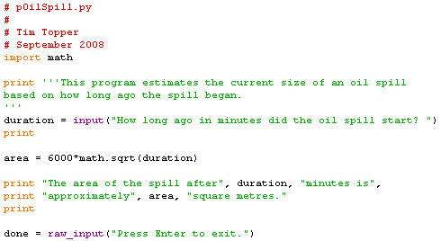

The area of an oil spill is given by the equation A=6000√t (i.e. "6,000 times the square root of t") where t is the time measured in minutes since the start of the spill, and A is in square metres. Write a program that can be used to estimate the size of the oil spill at a given time. A sample run might look like:
How long ago in minutes did the spill start? 180
The area of the spill after 180 minutes is 80498.44718 square meters.